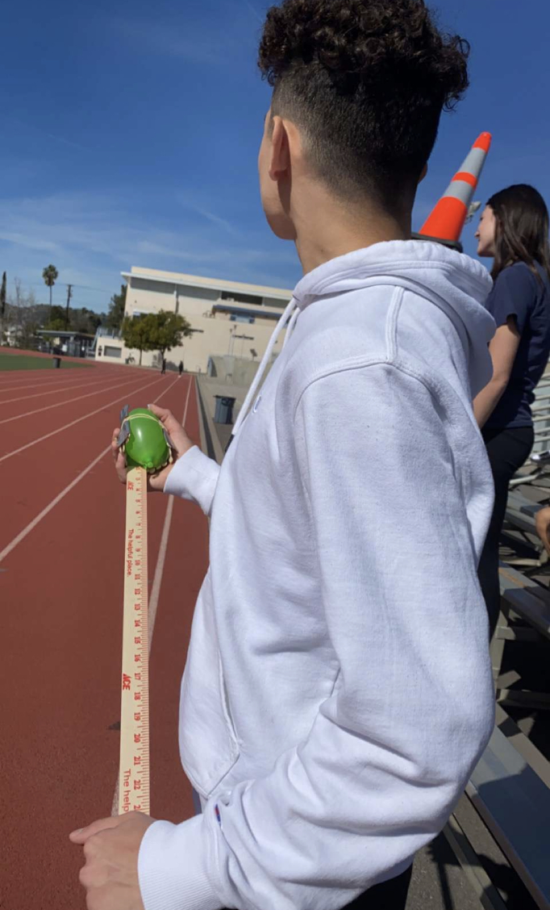

Hello, this is Arman Bedrosian's Website!
Hi, my name is Arman Bedrosian. I am a
freshman that attends CV High School.
August 29-31, September 1-2 (Week 2)
I learned how to play around in Tinkercad.
I also learned about mechanical engineering.
Some things that I learned about mechanical
engineering were the different fields it entails.
The fields it includes are math, physics, kinematics,
drafting, manufacturing, thermodynamics,
material science, fluid mechanics, and
structural analysis. Another thing I learned
about was the 6 simple machines. The wheel & axle, lever, pulley,
inclined plane, wedge, and screw. I learned about the proper
safety equipment needed in a lab. These include gloves, safety
glasses, aprons or lab coats, safety helmets, safety footwear, and
masks. I also learned about the rules in a lab. You must follow
Standard Operating Procedure, tie your hair back, have no loose
clothing on, wear close-toed shoes, check your surroundings, never
eat, work with teammates, and clean after yourself. The equipment
that will be used include the hand drill, hand grinder,
tabletop drill, lathe, horizontal bandsaw, vertical bandsaw,
manual mill, and tablesaw. I also learned about the safe and
proper way to use each tool. Another cool thing I did this week
was a marble pass. We had to move the marble through a series
of pipes to get into the bucket. However, there were more people
than pipes and the distance was longer than the length of all the
pipes combined. We got around this issue by passing down the pipes efficiently
to the next person without a pipe. Another cool thing I learned was
the engineering process and how similar it is to the scientific method.
You need to define the problem and the goal, research the problem,
brainstorm solutions, choose what you believe is the best solution,
then finally create and test the solution. After testing the
solution, look for ways to improve it so you can have the best
possible product. For challenge #2, I was judging my peers' Tinkercad
and compared it to the real life object they were copying.
I really enjoyed it, however, I do believe that I could've
been a little harder as a judge.
September 5-9 (Week 3)
During this week, I worked on finalizing my Rube Goldberg machine
model. My group and I picked which model to choose. Ultimately, we
ended up using Aren's model. On top of that, we also finalized our
dimensions for our project so we would be set for next week.
I really enjoy socializing and working as a group so I found it
very fun. Our challenge for the week was to design a 2D model of an E
with exact dimensions. We then drew the model on an open piece of paper
and cut it out. I accidentally detached the top of the E from the rest
of the E and I should've been more precise. However, my dimensions were
exact and my E was symmetrical.
.png)
September 12-16 (Week 4)
On Monday, we measured the shapes we needed for our Rube Goldberg
Machine. We also were able to cut out a few pieces. On Wednesday, we
put our components together. That was the most fun day because we got to
work together as a team and get ready to put our taped components all together
to make the Rube Goldberg machine. During Friday, we had a challenge.
It was to make a boat with the most time floating with the heaviest
weight on the boat. Our boat sunk very quickly. This was because we had little
surface area. We focused on making our boat too sturdy causing us to have little
paper left for the surface area.

September 19-23 (Week 5)
This whole week, we worked on our Rube Goldberg machine. We finalized it on Wednesday.
However, there were a couple mistakes in our design. We had to put walls on the sides of our inclined
plane to keep the car on track. The cars' suspension was too low so we had to switch it out
and bend the needle upwards. At the end, we finished the machine. It was a blast to work
with my team. Through trial and error, we persevered through the challenge. Next time,
I will try focusing more and build an even better machine. On Wednesday, we did MAP testing
and I didn't enjoy it all.
September 26-30 (Week 6)
On Monday, we were introduced to Computer Engineering. We also learned how Computer Engineering is a
very broad term as it goes over so many specialties in both computer hardware and software. On Tuesday,
we were to dissect a laptop. After we dissected the laptop, we were handed two worksheets on the parts of a laptop
to color in. Each color was a certain part. On Friday, we had to put the laptop back together, we had to finish the
worksheets that were handed to us. We also listened to a guest speaker who worked with firmware, (a branch of Computer
Engineering). I learned about the many different complex parts of a computer, however, I believe that
I should've participated more in my group. If I had truly given it my all, we would've been done much
sooner.

October 3-7 (Week 7)
On Monday, we were intoroduced to Bioengineering and its
many different branches. On Tuesday, we were assigned to make a
model of the animal prosthetic. We had to outline its details
on a piece of paper. I was very proud of my model. On Friday,
we made a peanut butter and jelly sandwich with specific instructions.
However, I messed up and I should've made my instructions more specific.
.JPG)
October 10-14 (Week 8)
On Monday, we were intoduced to Aerospace Engineering. We learned about
airplanes and rockets. We also created our BOM and made a Tinkercad for our model rocket.
On Friday, we did a challenge where we had to throw a paper into a bin. It was very fun and
I really liked my design.
October 17-21 (Week 9)
This week, we continued on our project to build a rocket. It was quite tough at first. However,
we put our minds to it and got it done. Our rocket also went the furthest in our class. We built a very
simple, yet effective design. I truly believe we could've done better had we not goofed off on Monday. However,
this was the most fun project we had yet.
October 24-27 (Week 10)
This week, we were introduced to environmental engineering. We learned about how engineers cut carbon emissions.
We also learned about water filtration plants. I find it fascinating how we manage to reuse water. Our project was to make a water
filter. Our water was a little bit murky. Our challenge for the week was to find out how many pieces of candy corn fit on a piece of paper.
It was very fun but our calculations were way off.
October 31 - November 4 (Week 11)
During this week, we learned about electrical engineering and even used a breadboard
on Tinkercad to practice. I learned about Ohm's Law and different types of circuits.
One type of circuit I learned about was the parallel circuit. A parallel
circuit is a circuit where each light doesn't rely on each other to work, as they are not
all connected in one line. Another type of circuit I learned about was the series circuit.
This circuit is all connected in one line and the only way electricity can travel through
is by going through the light before. Hypothetically, you buy christmas lights to put around your house.
When you turn them on, you notice one half of the lights are working while the other half isn't.
Why is this? This is because one christmas light broke, meaning the electricity cannot transfer
through that one christmas light. As a result, the rest of the lights cannot light up.


November 7-10 (Week 12)
On Tuesday, I did a breadboard with Jonah. Doing the breadboard was very fun, and I believe
I gave my best effort on it. Jonah and I equally contributed and I found it very fun.
This was the best project I've done yet. Instead of focusing on distractions, I really zoned into what
we were doing. On Thursday, we did a math challenge where we found how long it would take to count to 1,000,000.
My calculations were way off. I said 500 hours, when the correct answer was around 1600 hours.


November 14-18 (Week 13)
This week, we learned about arduino programming. We created accounts on an arduino website. Then, we created circuits with the arduino.
On Friday, we had a challenge to decide whether or not there were more wheels or doors in CVHS. We had a debate in the class. It was very fun, but it was decided that there were more doors than wheels in the school.
November 28-December 2 (Week 14)
This week, we were to create spaghetti bridges. I wasn't at school on Wednesday, but I still made the tinkercad of the bridge. However, when I came back on Friday,
we had to make the bridges. I believe that I was very productive on Friday and that I made up for my absence. My group and I created 2 bridges on Friday.


January 9-13 (Week 15)
This week was our first week back from winter break. We quickly got started with a powerpoint about business engineering. This type of engineering is much less
hands on then anything else we've done. Business engineering is about marketing your product and pitching it for different agencies or influencers to promote.
An example of this is Shark Tank, which is a show where a person makes a pitch to 5 influential multimillionaires, so they can put their product out there.
On Friday, I was supposed to create a business pitch with my group, but unfortunately, I was sick so I was unable to attend class. Because of this, I also have
no pictures to share this week.
January 17-20 (Week 16)
This week, we were introduced to chemical engineering. We learned that it was a very broad topic. I'm very interested how most big companines have a
chemical engineering. Such as cologne companies, shampoo companies, and deoderant companies. For our project, we made oobleck. We mixed corn starch and water
at a ratio to create it.

January 23-27 (Week 17)
This week, all we did was our project proposal for our new project. The project that Aren (my partner) and I chose was a mousetrap car. We were to complete
a 5 page proposal on it. We had to list the materials required, our research, a brief description of our project, our design constraints, and more. Next week, we will
design a CAD on the project. For further details on our proposal, click on this link:
https://docs.google.com/document/d/1qStxVGzRuAorSk_KbrfqcPcXxWqdovrSYIZhbLLAQPA/edit
January 30-February 2 (Week 18)
This week, we created a Tinkercad design for our mousetrap car. We needed exact measurements. We also required precision. Additionally, we needed
to give the audience a clear depiction of how the mousetrap car works. However, I believe I nailed it. My measurements were exact and accurate.

February 6-10 (Week 19)
This week, we began to build our mousetrap car. Our Tinkercad proved very useful for the measurements. However, we only worked on it on Wednesday. I
believe it was quite a productive day though, as we finished the whole base of our car. On Friday, we did a challenge to see who can carry a water balloon
on a stick on a 100 meter race. It was very fun, but my group did not do well.
